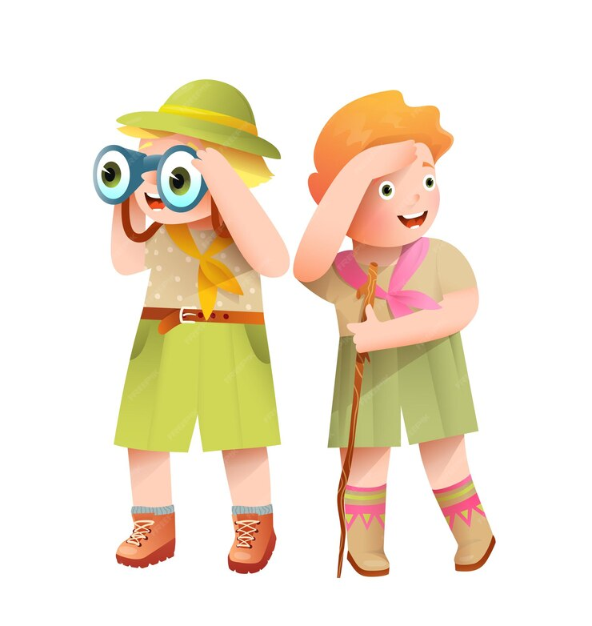
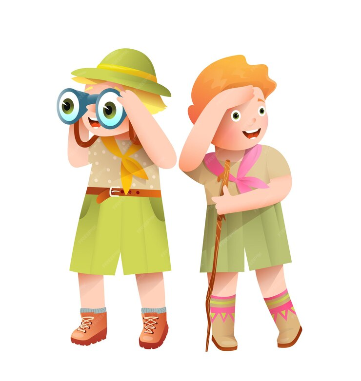

SOBRE
Nosso aplicativo de achados e perdidos foi desenvolvido para tornar mais fácil e rápida a localização de objetos perdidos. Com uma interface simples e intuitiva, ele permite que qualquer pessoa registre itens encontrados e procure por objetos que tenham sido extraviados. O objetivo é conectar pessoas e facilitar a recuperação de itens de valor, promovendo a colaboração e a confiança entre todos os usuários.
COMO AJUDAMOS
O aplicativo de achados e perdidos é uma ferramenta que ajuda o grupo escoteiro a manter um ambiente organizado e acolhedor. Ao facilitar o retorno de objetos perdidos aos seus donos, o aplicativo promove o cuidado e o respeito entre os escoteiros, reforçando valores como responsabilidade e companheirismo. Além disso, ele fortalece o senso de comunidade, essencial para que o grupo escoteiro seja um espaço seguro e harmonioso para todos.
 
